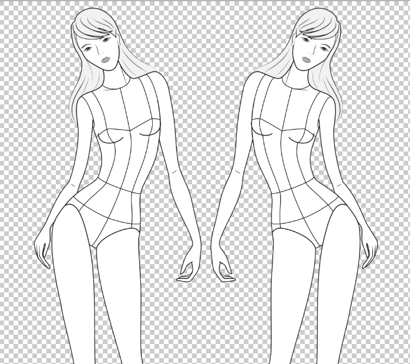
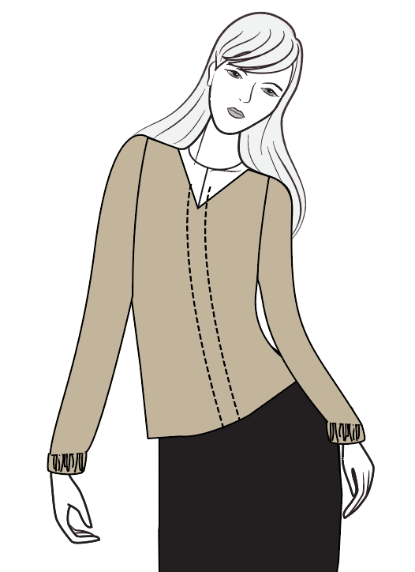
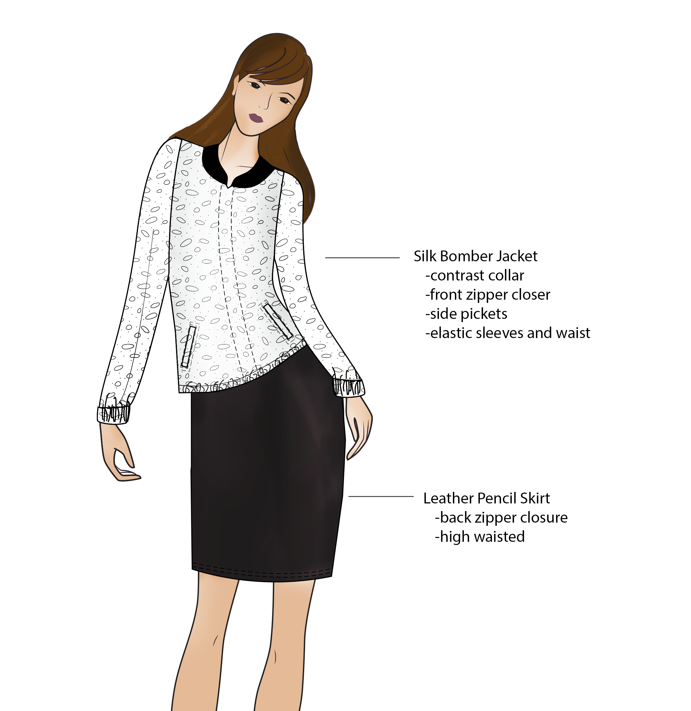

For my second 5 in 5 project I wanted to investigate the steriotypes associated with people who work with technology and the way they dress. After reading Silicon Valley has a dress code? You better believe it , I wanted to explore what it means to dress like a certain job, and if these dress code sterotypes were actually inhibiting women from progressing in the industry.
One of the articles quotes “Hoodie signals young talent,” really stuck with me. My blog name came from a funny conversation with my family when I first shared my interest in learning to code with them. As I had previously attended fashion school, they joked that the only hoodie I would be caught dead in would be cashmere.
I believe that clothing is necessary not only for utility, but for self expression. The steroetype of the talented coder who dresses in jeans and a hoodie everyday is outdated. As more and more women enter the field, new looks will emerge that provide the same comfort and practicality levels and allow for more self expression.
With that in mind, I started the process of reimaginging the sterotypical coder dress code.
Process
I started the process with a fashion croquie from designersnexus.com.
 CroquisI sketched out my ideas using Adobe Illustrator. I reimagined the classic hoodie as a bomber jacket, one of essential pieces for fall 2016. Just like the hoodie the jacket provides warmth, storage in the form of pockets, and comfort. Instead of jeans, I imagined a pencil skirt. While still versatile and casual, this bottom provides more polish.
 Fashion Figure with Description CalloutsOnce happy with with the shape of my garments I researched appropriate fabric choices. The bomber jacket is made of printed silk with a contrast collar. The front zipper makes it easy to take on and off. The leather materialzation of the skirt was intended to give it a non-confirmist look. 
The final design was drawn with Adobe Photoshop. The pattern of the garments was inserting by creating a new color swatches. The burn and dodge tools were used to shade the garments in order to provide movement and make them appear more lifelike.
Challenges, Constraints, and Criteria
The greatest challenge of the project was relearning to use Adobe Illustrator. Although I have prior experience in fashion design, I quickly learned that 4 years is plenty of time to become rusty! The constraints of this project involved it taking place in on day. It was difficult to design with out having done market research and gone through rounds of cuts before coming up with a final concept. The criteria of project was to be womenswear targeted at consumers between 20-35 years old.
This project is far from complete. I believe that fashion is always evolving, and in order to reimagine the complete wardrobe of a woman working in the technology field one would need to create complete several seasonal collections. I believe that it was a useful exercise for me to picture my own evolution as a creative technologist. Being comfortable in what one is wearing provides confidence, and confidence puts me in the best mindset for creativity.